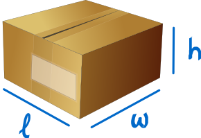
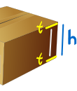
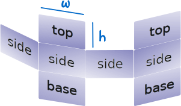
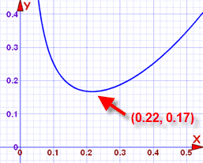

Mathematical Models
Mathematics can be used to "model", or represent, how the real world works.
Example: how much space is inside this cardboard box?

We know three measurements:
- l (length),
- w (width), and
- h (height),
and the formula for the volume of a cuboid is:
Volume = l × w × h
So we have a (very simple) mathematical model of the space in that box.
Accurate?
The model is not the same as the real thing.
In our example we did not think about the thickness of the cardboard, or many other "real world" things.
But hopefully it is good enough to be useful.
 |
If we are charged by the volume of the box we send, we can take a few measurements and know how much to pay. It can also be useful when deciding which box to buy when we need to pack things. So the model is useful! |
But maybe we need more accuracy, we might need to send hundreds of boxes every day, and the thickness of the cardboard matters. So let's see if we can improve the model:
The cardboard is "t" thick and we measure from outside the box. How much space is inside?

The inside measurements need to be reduced by the thickness of each side:
- The inside length is l-2t
- The inside width is w-2t,
- The inside height is h-2t
and now the formula is:
Inside Volume = (l-2t) × (w-2t) × (h-2t)
Now we have a better model. Still not perfect (did we consider wasted space because we could not pack things neatly, etc ...), but better.
So a model is not reality, but should be good enough to be useful.
Playing With The Model
Now we have a model, we can use it in different ways:
Example: Your company uses 200x300x400 mm size boxes, and the cardboard is 5mm thick.
Someone suggests using 4mm cardboard ... how much better is that?
Let us compare the two volumes:
- Current Volume = (200-2×5) × (300-2×5) × (400-2×5) = 21,489,000 mm3
- New Volume = (200-2×4) × (300-2×4) × (400-2×4) = 21,977,088 mm3
That is a change of:
(21,977,088-21,489,000)/21,489,000 ≈ 2% more volume
So the model is useful. It lets us know we will get 2% more space inside the box (for the same outside measurements).
But there are still "real world" things to think about, such as "will it be strong enough?"
Thinking Clearly
To set up a mathematical model we also need to think clearly about the facts!
Example: on our street there are twice as many dogs as cats. How do we write this as an equation?
- Let D = number of dogs
- Let C = number of cats
Now ... is that: 2D = C
or should it be: D = 2C
Think carefully now!
The correct answer is D = 2C
(2D = C is a common mistake, as the question is written "twice ... dogs ... cats")
Here is another one:
Example: You are the supervisor of 8-hour shift workers. They recently had their break times reduced by 10 minutes but total production did not improve.
At first glance there is nothing to model, because there was no change in production.
But wait a minute ... they are working 10 minutes more, but producing the same amount, so production per hour must have dropped!
Let us assume they used to work 7 hours (420 minutes):
Change in production per hour = 410/420 = 0.976...
Which is a reduction of more than 2%
But even worse: the first few hours of the shift are not affected by the shorter break time, so it could be a 4 or 5% reduction later in the shift.
You could recommend:
- looking at production rates for every hour of the shift
- trying different break times to see how they affect production
A Bigger Example: Most Economical Size
OK, let us have a go at building and using a mathematical model to solve a real world question.
Your company is going to make its own boxes!
It has been decided the box should hold 0.02m3 (0.02 cubic meters which is equal to 20 liters) of nuts and bolts.
The box should have a square base, and double thickness top and bottom.
Cardboard costs $0.30 per square meter.
It is up to you to decide the most economical size.
Step One: Draw a sketch!
It helps to sketch out what we are trying to solve!
 |
The base is square, so we will just use "w" for both lengths |
|
The box has 4 sides, and double tops and bottoms. The box shape could be cut out like this (but is probably more complicated): |
 |
Step Two: Make Formulas.
Ignoring thickness for this model:
Volume = w × w × h = w2h
And we are told that the volume should be 0.02m3:
w2h = 0.02
Areas:
Area of the 4 Sides = 4 × w × h = 4wh
Area of Double Tops and Bases = 4 × w × w = 4w2
Total cardboard needed:
Area of Cardboard = 4wh + 4w2
Step Three: Make a Single Formula For Cost
We want a single formula for cost:
Cost = $0.30 × Area of Cardboard
= $0.30 × (4wh + 4w2)
And that is the cost when we know width and height.
That could be hard to work with ... a function with two variables.
But we can make it simpler! Because width and height are already related by the volume:
Volume = w2h = 0.02
... which can be rearranged to ...
h = 0.02/w2
... and that can be put into the cost formula ...
Cost = $0.30 × (4w×0.02/w2 + 4w2)
And now the cost is related directly to width only.
With a little simplification we get:
Cost = $0.30 × (0.08/w+ 4w2)
Step Four: Plot it and find minimum cost
What to plot? Well, the formula only makes sense for widths greater than zero, and I also found that for widths above 0.5 the cost just gets bigger and bigger.
So here is a plot of that cost formula for widths between 0.0 m and 0.55 m:

Plot of y= 0.3(0.08/x+4x2)
x is width, and y is cost
Just by eye, I see the cost reaches a minimum at about (0.22, 0.17). In other words:
- when the width is about 0.22 m (x-value),
- the minimum cost is about $0.17 per box (y-value).
In fact, looking at the graph, the width could be anywhere between 0.20 and 0.24 without affecting the minimum cost very much.
Step Five: Recommendations
Using this mathematical model you can now recommend:
- Width = 0.22 m
- Height = 0.02/w2 = 0.02/0.222 = 0.413 m
- Cost = $0.30 × (0.08/w+ 4w2) = $0.30 × (0.08/0.22+ 4×0.222) = $0.167
Or about 16.7 cents per box
But any width between 0.20 m and 0.24 m is fine.
You might also like to suggest improvements to this model:
- Include cost of glue/staples and assembly
- Include wastage when cutting box shape from cardboard.
- Is this box a good shape for packing, handling and storing?
- Any other ideas you may have!
Predicting the Future
Mathematical models can also be used to forecast future behavior.
Example: An ice cream company keeps track of how many ice creams get sold on different days.

By comparing this to the weather on each day they can make a mathematical model of sales versus weather.
They can then predict future sales based on the weather forecast, and decide how many ice creams they need to make ... ahead of time!
Computer Modeling
Mathematical models can get very complex, and so the mathematical rules are often written into computer programs, to make a computer model.
Have a play with a simple computer model of reflection inside an ellipse
or the single pendulum or double pendulum animation.
More complex examples include:
- Weather prediction
- Economic Models (predicting interest rates, unemployment, etc)
- Public health vs infectious diseases
- Models of how large structures behave under stress (bridges, skyscrapers, etc)
- Many more ...
If you become an expert in any of those you will have a job for life!